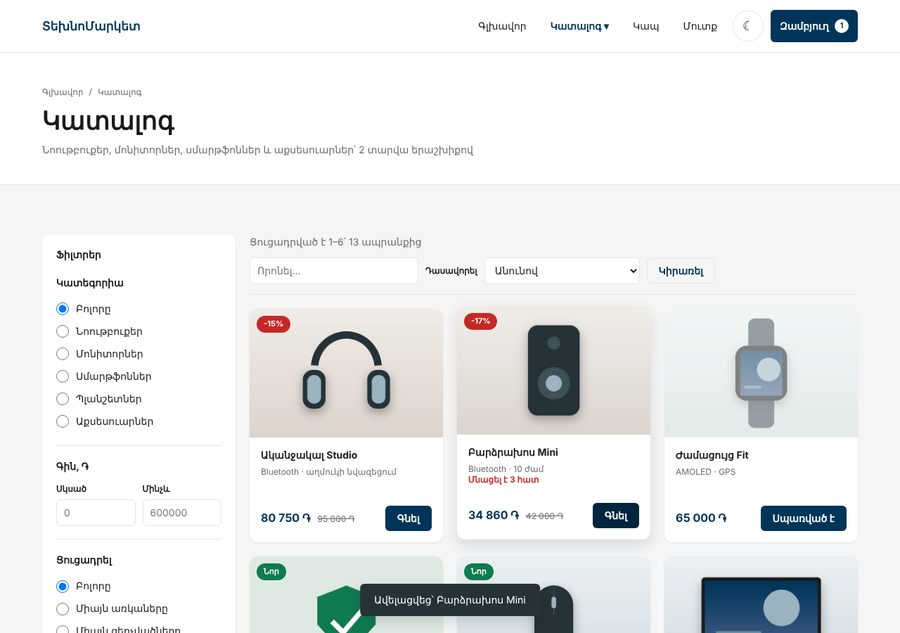
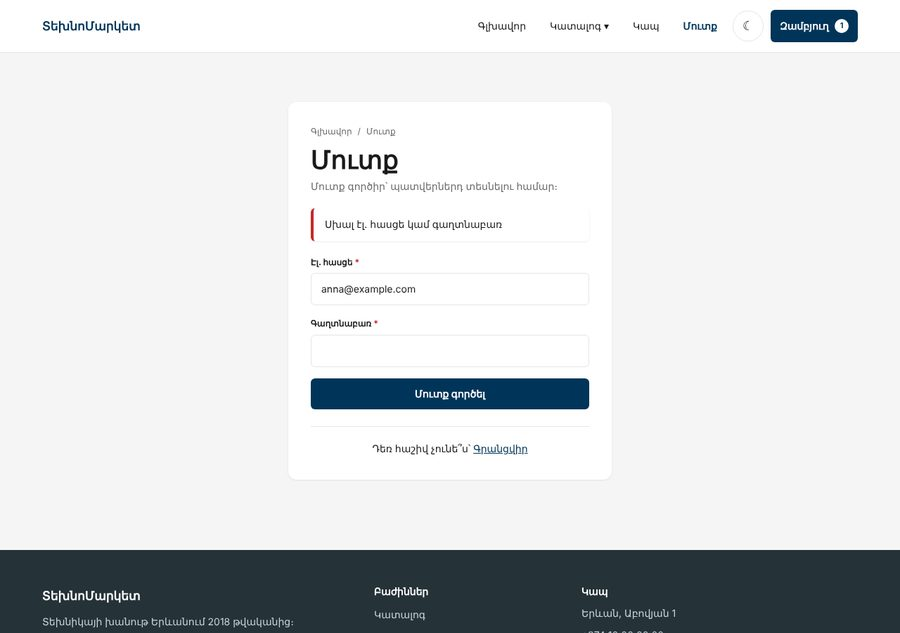
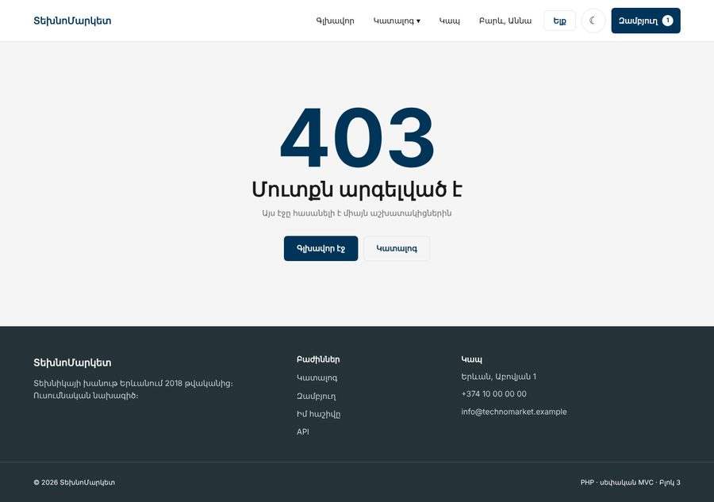
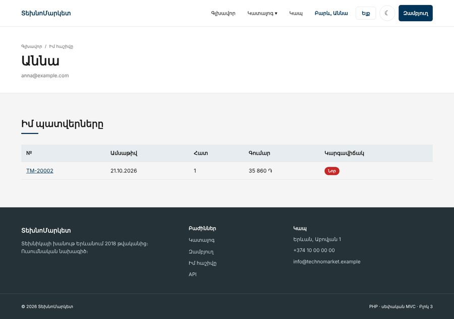
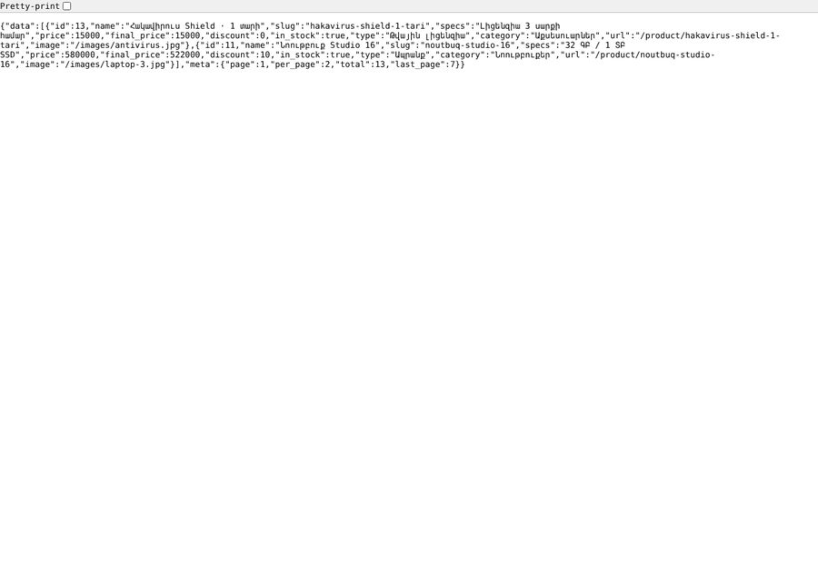

Առաջադրանք 2 / 3 · PHP Դաս 12–17 · ընթացքում + 1 շաբաթ
Սեփական ֆրեյմվորք
Առաջադրանք 1-ի խանութը աշխատում է, բայց ամեն էջ առանձին ֆայլ է, իսկ ադմինը բաց է բոլորի համար։ Այս վեց դասում նույն կայքը ստանում է այն կառուցվածքը, որ ունի Laravel-ը․ մոդելներ, Repository-ներ, Router, կոնտրոլերներ, մուտք դերերով և JSON API։ Համեմատիր քեզ օրինակ 2-ի հետ, բայց միայն ավարտելուց հետո։
00Ինչ պետք է ստացվի
Կայքը գրեթե նույնն է, ինչ Առաջադրանք 1-ում, բայց կոդը ամբողջովին վերակառուցված է՝ դասեր, Composer, մեկ մուտք, կոնտրոլերներ։ Հասցեները դառնում են մաքուր (/product/noutbuq-pro-14), ադմինը փակվում է մուտքով և դերերով, իսկ «Գնել»-ը և որոնումը աշխատում են առանց էջի վերբեռնման՝ սեփական JSON API-ով։ Անջատված JavaScript-ով ամեն ինչ աշխատում է ինչպես նախկինում։








01Ինչ ես ստանում
Աշխատում ես Առաջադրանք 1-ի նախագծի վրա (կամ օրինակ 1-ի պատճենի)։ Նախքան սկսելը՝ git commit․ Դաս 15-ում շատ ֆայլեր կտեղափոխվեն, և պետք է կարողանաս վերադառնալ։
| Նոր սյունակ/աղյուսակ | Ինչի համար | Դաս |
|---|---|---|
products.type | physical կամ digital․ Product::fromRow()-ը ընտրում է դասը | 13 |
products.weight | Գրամ․ shippingCost()-ը՝ 1000 կամ 3000 ֏ | 13 |
users | role ENUM('admin','manager','customer') DEFAULT 'customer' | 16 |
orders.user_id | Մուտք գործածի պատվերը՝ «Իմ հաշիվը» էջի համար, հյուրինը՝ NULL | 16 |
Ինչպես Դաս 16-ում․ php -r "echo password_hash('...', PASSWORD_DEFAULT);" և INSERT HeidiSQL-ում։ Ստեղծիր երեքը՝ admin, manager և մեկ customer, որ ստուգես բոլոր դերերը։
02Շաբաթվա պլան
| Դաս | Ինչ է փոխվում | Քայլ |
|---|---|---|
| 12 | Ապրանքը՝ Product օբյեկտ, զամբյուղը՝ Cart դաս | 1 |
| 13 | abstract Product, PhysicalProduct, DigitalProduct, Shippable | 2 |
| 14 | Composer, App\ namespace, Repository-ներ, .env | 3 |
| 15 | public/, Router, կոնտրոլերներ, մաքուր հասցեներ, 404/405 | 4 |
| 16 | Մուտք, գրանցում, CSRF, դերեր, /admin-ի պաշտպանություն | 5 |
| 17 | JSON API, fetch-ով «Գնել» և որոնում, progressive enhancement | 6 |
03Քայլեր
Քայլ 1 · Ապրանքը՝ օբյեկտ, զամբյուղը՝ դաս · Դաս 12
Product՝readonlyհատկություններով ևfromRow()-ով։normalizeProduct()-ի (int)-երը տեղափոխվում են այստեղ- Շաբլոններում՝
$p->name,$p->formattedPrice(),$p->hasDiscount()։$p->prise-ը հիմա սխալ է, ոչ լուռnull Cart՝&$storage-ով,setQty()-ով (Դաս 12-ի տնային) ևitems()-ով, որ վերադարձնում էCartItem-ներ
class Cart
{
private const MAX_QTY = 10;
public function __construct(private array &$storage) {}
public function add(int $id, int $qty = 1, int $limit = self::MAX_QTY): void
{
if ($qty < 1) {
return;
}
$current = $this->storage[$id] ?? 0;
$this->storage[$id] = min($current + $qty, self::MAX_QTY, $limit);
}}Քայլ 2 · Ժառանգում և ինտերֆեյս · Դաս 13
Կատալոգին ավելանում է թվային ապրանք՝ հակավիրուսի լիցենզիա։ Այն միշտ առկա է, պահեստ չունի և չի առաքվում։ Շաբլոնը և զամբյուղը չգիտեն, թե որ դասն է․ նրանք կանչում են inStock(), maxQty(), typeLabel()։
// ---------- Պարտադիր ժառանգներում ----------
abstract public function inStock(): bool;
/** Քանի՞ հատ կարելի է ավելացնել զամբյուղ */
abstract public function maxQty(): int;
abstract public function typeLabel(): string;
}/** Լիցենզիա, որ ուղարկվում է էլ. փոստով։ Shippable ՉԷ — PHP Դաս 13 */
class DigitalProduct extends Product
{
public static function fromRow(array $row): static
{
return new static(...parent::baseFields($row));
}
public function inStock(): bool
{
return true; // միշտ առկա է
}
public function maxQty(): int
{
return 5; // մեկ պատվերում՝ առավելագույնը 5 լիցենզիա
}
public function typeLabel(): string
{
return 'Թվային լիցենզիա';
}
} public static function calculateShipping(array $items): int
{
$total = 0;
foreach ($items as $item) {
if ($item->product instanceof Shippable) {
$total += $item->product->shippingCost();
}
}
return $total;
}Ժառանգը կրկնում է ծնողի բոլոր պարամետրերը և փոխանցում դրանք parent::__construct()-ին (Դաս 13)։ Դա կրկնություն է, բայց բացահայտ․ կարդալով մեկ ֆայլը, տեսնում ես ամեն դաշտը։ fromRow()-ում ...$array-ը բացում է զանգվածը անվանված արգումենտների՝ բանալիները պետք է համընկնեն պարամետրերի անուններին։
Քայլ 3 · Composer, namespace, Repository · Դաս 14
composer init, PSR-4՝"App\\": "src/","files": ["src/helpers.php"],composer require vlucas/phpdotenv- Ամբողջ SQL-ը՝
ProductRepository,CategoryRepository,OrderRepository։PDO-ն ստանում են կոնստրուկտորով validate.php-ի ֆունկցիաները՝Validatorդասի ստատիկ մեթոդներ (Դաս 14-ի տնային)config.php-ի փոխարեն՝.env։$dotenv->required([...])-ը կասի, եթե ինչ-որ բան մոռացել ես
{
"name": "meri/technomarket",
"description": "ՏեխնոՄարկետ — սեփական MVC, PHP Դաս 12–17",
"type": "project",
"require": {
"php": ">=8.2",
"vlucas/phpdotenv": "^5.6"
},
"autoload": {
"psr-4": {
"App\\": "src/"
},
"files": [
"src/helpers.php"
]
},
"config": {
"sort-packages": true
}
} /** Նոր դաշտ՝ մեկ տեղում, և բոլոր հարցումները այն ստանում են — PHP Դաս 14-ի տնային */
private const SELECT_FIELDS = '
p.id, p.category_id, p.name, p.slug, p.specs, p.description, p.image,
p.price, p.discount, p.stock, p.weight, p.type, p.is_active, p.created_at,
c.name AS category_name, c.slug AS category_slug,
ROUND(p.price * (100 - p.discount) / 100) AS final_price
';
private const FROMՔայլ 4 · Մեկ մուտք · Դաս 15
public/՝index.php,.htaccess,css/,images/,js/։ Laragon-ի DocumentRoot-ը՝public/- Router՝
get(),post(),delete(), և 405՝ եթե ուղին կա այլ մեթոդով (Դաս 15-ի խորացված տնային) - Ամեն էջ-ֆայլ դառնում է կոնտրոլերի մեթոդ, որ վերադարձնում է
Response։ Ջնջիր հինcatalog.php,cart-add.php... ֆայլերը - Նոր ուղիներ՝
/category/{slug}և/search?q=(Դաս 15-ի տնային) - Layout-ին ամեն էջում պետք են զամբյուղը և օգտագործողը․
share()-ը տալիս է դրանքpage()-ին
// ---------- Հանրային ----------
$router->get('/', [$homeController, 'index']);
$router->get('/catalog', [$productController, 'index']);
$router->get('/category/{slug}', [$productController, 'category']);
$router->get('/search', [$productController, 'search']);
$router->get('/product/{slug}', [$productController, 'show']);
$router->get('/contact', [$contactController, 'form']);
$router->post('/contact', [$contactController, 'submit']);
$router->post('/theme', [$contactController, 'theme']);
// ---------- Զամբյուղ և պատվեր ----------
$router->get('/cart', [$cartController, 'index']);
$router->post('/cart/add', [$cartController, 'add']);
$router->post('/cart/update', [$cartController, 'update']);
$router->post('/cart/remove', [$cartController, 'remove']);
$router->get('/checkout', [$checkoutController, 'form']);
$router->post('/checkout', [$checkoutController, 'store']);
$router->get('/thanks/{id}', [$checkoutController, 'thanks']);
// ---------- Մուտք public function show(Request $request, string $slug): Response
{
$product = $this->products->findBySlug($slug)
?? throw new NotFoundException('Ապրանքը չի գտնվել կամ այլևս չի վաճառվում');
return Response::html(page('pages/product', [
'product' => $product,
'related' => $this->products->related($product),
], $product->name . ' — ' . SITE_NAME));
}POST /admin/products/archive-ը պետք է գրանցված լինի POST /admin/products/{id}-ից առաջ․ Router-ը վերցնում է առաջին համընկնողը, և «archive»-ը կդառնար $id։ Laravel-ում նույն կանոնն է։
Laragon-ում .htaccess-ը CSS-ը տալիս է ուղիղ։ php -S localhost:8000 -t public public/index.php-ի դեպքում նույնը անում է public/index.php-ի առաջին if-ը՝ return false։
Քայլ 5 · Մուտք, գրանցում, դերեր · Դաս 16
User,UserRepository,Auth,LoginThrottle,AuthController,RegisterController՝ Դաս 16-ի կոդովcsrf_field()՝ ամեն POST ֆորմայում, ներառյալ ելքը, թեման և −/+ կոճակները։ Ստուգումը՝ մեկ տեղում՝public/index.php/admin…․ մուտք չկա →/login(և վերադարձ նույն էջ), մուտք կա, բայց գնորդ է → 403- Մենեջերը ավելացնում և խմբագրում է, արխիվացնում է միայն ադմինը (Դաս 16-ի տնային)։ Ստուգումը կոնտրոլերում է, ոչ միայն շաբլոնում
- Header-ում՝ «Բարև, անուն», «Ելք» (POST), աշխատակցի համար՝ «Ադմին»։ Նոր էջ՝
/account, իր պատվերներով
// 1. CSRF — ամեն վիճակ փոխող հարցում։ Ֆորմայից՝ _token, JS-ից՝ X-CSRF-Token — Դաս 16, 17
if (!in_array($request->method, ['GET', 'HEAD', 'OPTIONS'], true)) {
$token = $request->input('_token') ?: $request->header('X-CSRF-Token');
if (!csrf_verify($token)) {
throw new HttpException('Ձևաթուղթը ժամկետանց է։ Թարմացրեք էջը և փորձեք կրկին։', 419);
}
}
// 2. Ադմին գոտի — մուտք գործա՞ծ է
$isAdminArea = $request->path === '/admin' || str_starts_with($request->path, '/admin/');
if ($isAdminArea && !$auth->check()) {
if ($request->method === 'GET') {
$_SESSION['intended'] = $request->path; // մուտքից հետո՝ հենց այստեղ
}
$response = Response::redirect('/login');
// 3. Մուտք գործած է, բայց աշխատակի՞ց է ⭐
} elseif ($isAdminArea && !$auth->isStaff()) {
throw new HttpException('Այս էջը հասանելի է միայն աշխատակիցներին', 403);
} else {
$response = $router->dispatch($request);
} /** Միայն ադմինը — մենեջերը ստեղծում և խմբագրում է, բայց չի հեռացնում — PHP Դաս 16-ի տնային ⭐ */
public function archive(Request $request): Response
{
if (!$this->auth->isAdmin()) {
throw new HttpException('Արխիվացնել կարող է միայն ադմինը', 403);
}
$count = $this->products->archive($request->array('ids'));
flash($count > 0 ? 'success' : 'error', $count > 0 ? "Արխիվացվեց՝ {$count} ապրանք" : 'Ոչինչ չնշվեց');
return Response::redirect('/admin');
}Քայլ 6 · API և JavaScript · Դաս 17
Response::json(),Product::toArray()՝ բացահայտ ցանկով (պահեստի քանակը դրսից չի երևում)GET /api/products՝q,category,sort,page,per_page(առավելագույնը 50),GET /api/cart,POSTևDELETE /api/cart/items- Սխալները՝ JSON-ով, եթե հասցեն
/api/է կամAccept: application/json, այլապես՝ HTML էջ - JS-ը՝ ES մոդուլներ (Բլոկ 2, Դաս 18)․
api.js,cart.js,search.js։ Ֆորմաները մնում են ֆորմաներ՝data-cart-add,data-live-search
async function request(url, options = {}) {
const response = await fetch(url, {
...options,
headers: {
"Accept": "application/json",
"X-CSRF-Token": csrf, // ⭐ առանց սրա POST-ը կստանա 419
...(options.body ? { "Content-Type": "application/json" } : {}),
},
});
const payload = await response.json();
// fetch-ը 4xx/5xx-ի դեպքում ՉԻ գցում սխալ — պիտի ստուգել ok-ը ⭐
if (!response.ok) {
throw new ApiError(payload.error?.message ?? "Սխալ", response.status, payload.error?.errors);
}
return payload;
} try {
const qty = Number(form.elements.qty?.value ?? 1);
const data = await api.addToCart(Number(form.elements.id.value), qty);
updateCount(data.data.count);
showToast(data.data.message);
announce(data.data.message);
} catch (error) {
if (error instanceof ApiError && error.status === 422) {
// Սերվերի սխալը՝ օգտագործողին, ոչ Console-ին
const message = Object.values(error.errors).join(" ") || error.message;
showToast(message);
announce(message);
} else {
form.submit(); // ⭐ ամեն այլ դեպքում՝ սովորական ֆորման (419, ցանց...)
}Բլոկ 2-ում JS-ը կառուցում էր ամբողջ էջը products.json-ից։ Այստեղ HTML-ը կառուցում է սերվերը, իսկ JS-ը միայն ավելացնում է գործողություններ առանց վերբեռնման։ Այդպես էջը աշխատում է առանց JS-ի, որոնողական համակարգերը տեսնում են ապրանքները, իսկ սխալ JS-ը չի «կոտրում» խանութը։ Բլոկ 2-ի գաղափարը մնում է․ մնացած կոդը չգիտի, թե ինչպես է fetch-ը աշխատում, այն գիտի միայն api.addToCart()։
04Հաճախ հանդիպող սխալներ
| Սխալ | Ինչպես ուղղել |
|---|---|
Class "App\Models\Product" not found | namespace-ը համընկնո՞ւմ է թղթապանակին, ֆայլի անունը՝ դասի անվանը, կանչե՞լ ես composer dump-autoload (Դաս 14-ի չորս կետը) |
Class "App\Repositories\PDO" not found | use PDO; ֆայլի սկզբում |
CSS-ը չի բեռնվում /product/... էջում | Հարաբերական ուղի․ css/main.css → /css/main.css |
| Ամեն POST-ը տալիս է 419 | Ֆորմայում չկա <?= csrf_field() ?>, կամ session_start()-ը կանչվում է csrf_token()-ից հետո |
| fetch-ը տալիս է 419, ֆորման՝ ոչ | Վերնագիրը՝ X-CSRF-Token, արժեքը՝ <meta name="csrf-token">-ից։ Ադմինի layout-ում նույնպես պետք է meta-ն |
$_POST-ը դատարկ է fetch-ից | JSON մարմինը կարդում է Request::fromGlobals()-ը php://input-ից (Դաս 17) |
| Մուտքից հետո դեռ «Մուտք» է երևում | Auth::user()-ը քեշավորել է null-ը նախքան login()-ը։ login()-ում թարմացրու $this->cached-ը |
Undefined variable $cart էջի շաբլոնում | share()-ի տվյալները պետք է հասնեն նաև էջի շաբլոնին, ոչ միայն layout-ին |
| Մենեջերը կարողանում է արխիվացնել DevTools-ով | Ստուգումը միայն շաբլոնում է։ Ավելացրու isAdmin() կոնտրոլերում և նետիր 403 |
05Համեմատիր օրինակի հետ
Գործարկիր example-2-mvc-ը README-ի հրամաններով։ Համեմատիր․
1. Կոնտրոլերի երկարությունը։ Քո ամենաերկար կոնտրոլերը քանի՞ տող է։ Կա՞ դրանում SQL կամ HTML (Դաս 15-ի տնային)։
2. Որտեղ է ստուգվում դերը։ Փնտրիր isAdmin և isStaff։ Եթե որևէ մեկը միայն views/-ում է, դա պաշտպանություն չէ։
3. Ինչ է վերադարձնում API-ն։ curl /api/products/noutbuq-pro-14։ Կա՞ այնտեղ stock, is_active կամ created_at։
06Ընդունման ստուգաթերթ
Կառուցվածք
public/-ից դուրս ոչինչ չի բացվում․/.env,/composer.json,/src/helpers.php՝ 404- Մեկ
require_once __DIR__ . '/vendor/autoload.php', ոչ մի այլrequireդասերի համար - Ոչ մի SQL կոնտրոլերներում և շաբլոններում, ոչ մի
$_GET/$_POST՝Request-ից դուրս - Անհայտ ուղին՝ 404 էջ, ուղին կա, բայց սխալ մեթոդով՝ 405
Մուտք և դերեր
/admin/ordersառանց մուտքի →/login→ մուտքից հետո՝ հենց/admin/orders- Վեց սխալ գաղտնաբառ՝ արգելափակում, նույնիսկ ճիշտ գաղտնաբառով
- Մուտքից առաջ և հետո
PHPSESSID-ը տարբեր է (session_regenerate_id) - Գրանցում՝ DevTools-ով ավելացված
role=admin-ով → բազայումcustomer,/admin՝ 403 - Նույն հասցեով երկրորդ գրանցում՝ «արդեն կա հաշիվ», գաղտնաբառի դաշտերը դատարկ
- Մենեջերը չի տեսնում checkbox-ները, իսկ ճիշտ token-ով ուղիղ POST-ը ստանում է 403
- Սեփական համակարգչում բացված
attack.html-ը, որ ուղարկում է արխիվացման ֆորմա, մերժվում է (419) - Գնորդը
/account-ում տեսնում է միայն իր պատվերները, ուրիշինը/thanks/{id}-ով՝ 404
API և JavaScript
curl -i "http://technomarket.test/api/products?per_page=2" # 200, data + meta
curl -i http://technomarket.test/api/products/չկա # 404, JSON
curl -i http://technomarket.test/api/cart/items # 405, JSON
curl -i -X POST http://technomarket.test/api/cart/items \
-H "Content-Type: application/json" -d '{"id":1,"qty":2}' # 419
curl -i -X POST http://technomarket.test/api/cart/items \
-H "Content-Type: application/json" -d '{id:1' # 400
curl "http://technomarket.test/api/products?per_page=100000" # per_page: 50
curl "http://technomarket.test/api/products?per_page=-5&page=abc" # per_page: 1, page: 1- «Գնել»-ը չի վերբեռնում էջը, header-ի թիվը թարմանում է, էկրանընթերցիչը կարդում է հաղորդագրությունը (
role="status") - Որոնումը թարմացնում է արդյունքները 300 մվ հետո, URL-ը թարմանում է, F5-ից հետո՝ նույն որոնումը
- DevTools → Settings → Disable JavaScript․ «Գնել»-ը և որոնումը աշխատում են ֆորմաներով
- Թվային ապրանքը՝ «∞» ադմինում, առանց «Պահեստում» տողի, միայն թվային ապրանքներով պատվերում առաքումը 0 է